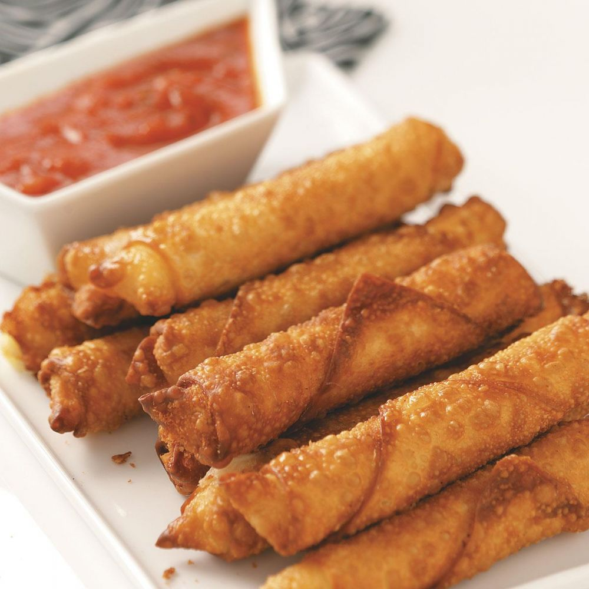

Egg Roll Mozarella Sticks

Description
Egg roll mozzarella sticks are a fusion snack where gooey mozzarella cheese is wrapped in an egg roll wrapper and then deep-fried until crispy and golden. They offer a deliciously crunchy exterior with a melty, cheesy interior, perfect for dipping in marinara sauce or your favorite condiment
Ingredients
- Mozzarella sticks
- Egg roll wrappers
- Beaten eggs
- Flour
- Oil (for frying)
Optional
- Seasonings (e.g., garlic powder, Italian seasoning)
- Marinara sauce for dipping
Steps
- Prep the Cheese: Cut mozzarella into sticks if not using pre-cut.
- Wrap:Place a mozzarella stick in an egg roll wrapper, fold the sides, and roll tightly. Seal with beaten egg.
- Coat: Dust with flour.
- Heat Oil: Heat oil to 350°F (175°C).
- Fry: Fry until golden brown, about 2-3 minutes per side.
- Drain: Remove and drain on paper towels.
- Serve: Enjoy with marinara sauce or your favorite dip.